Brand Foundation
The mark applied at scale, and the fine-grain details that define its voice.
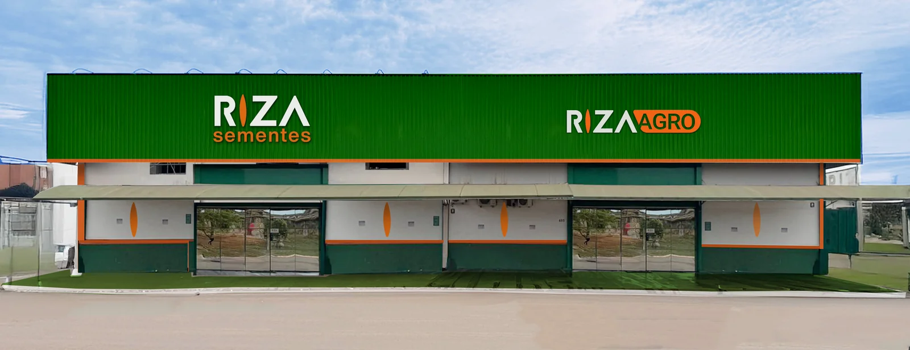
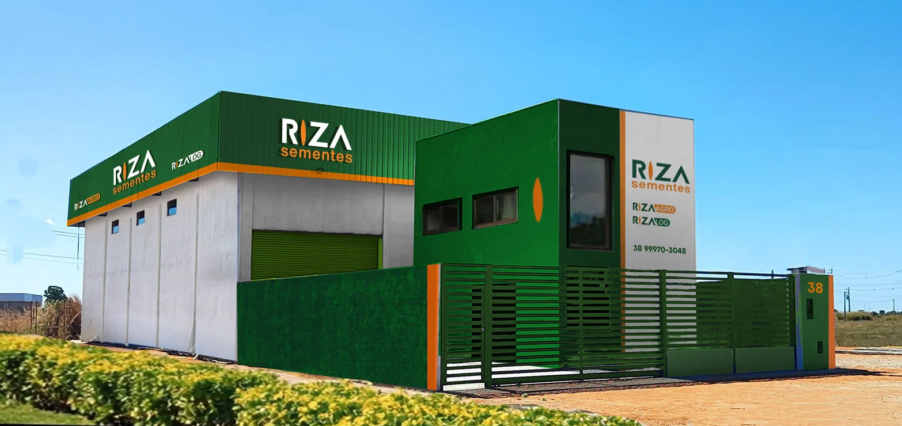
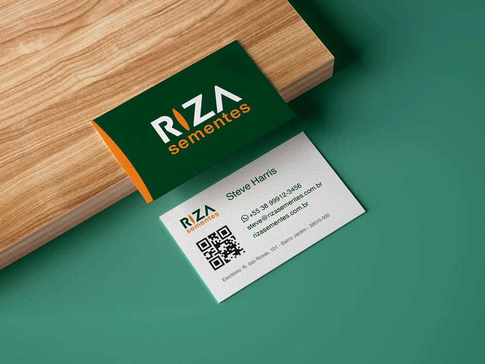
 Brand System · Agribusiness
Brand System · Agribusiness
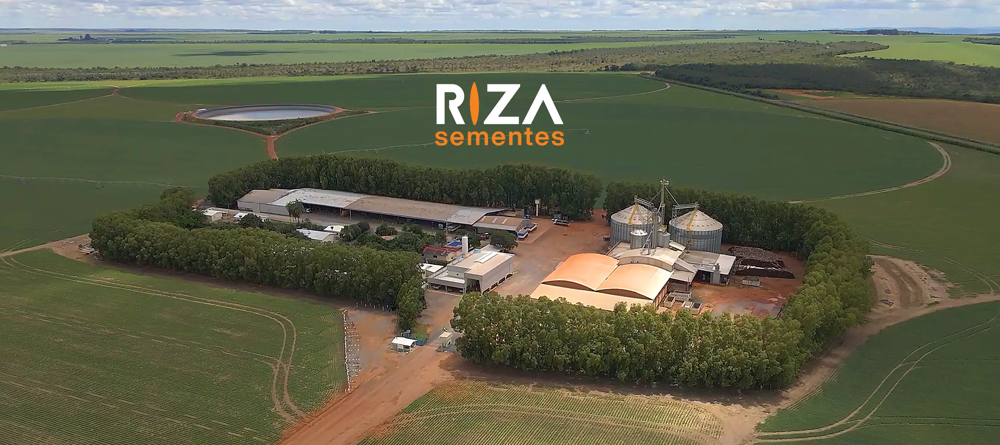
New Brand in a Legacy Market
Riza Sementes was a new premium seed brand that had to earn credibility fast in a market dominated by long-standing players. My job was to make that happen.
Sementes means "seeds" in Portuguese, so I started there.
Rather than default to generic agribusiness cues, I leaned into the sector's own colors, orange and green, sharpened by precise geometry. My signature move: the letter I, reimagined as a seed shape, anchoring the wordmark in the product itself.
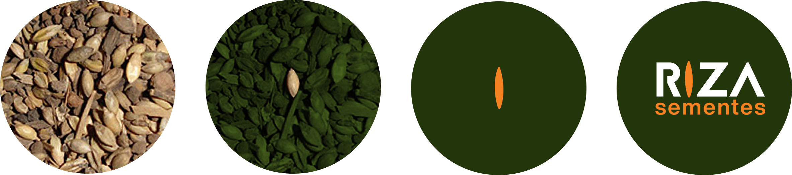
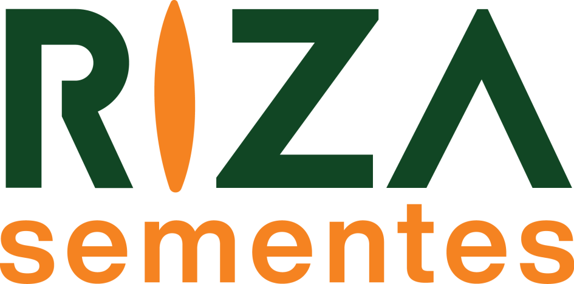
The mark applied at scale, and the fine-grain details that define its voice.



Identity translated into the object itself, where brand meets hand.
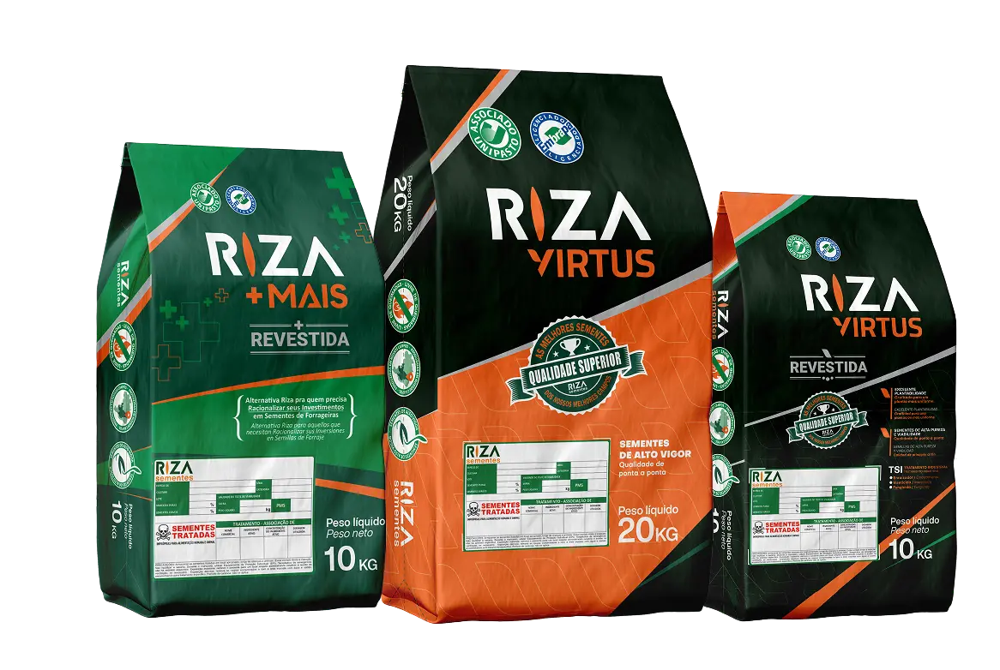
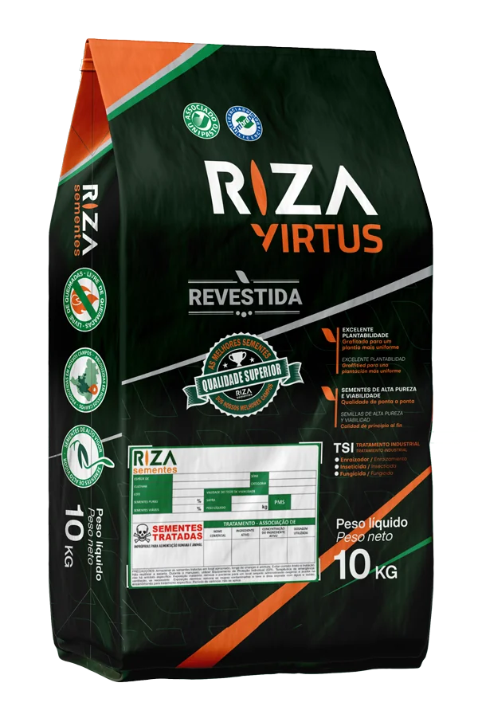
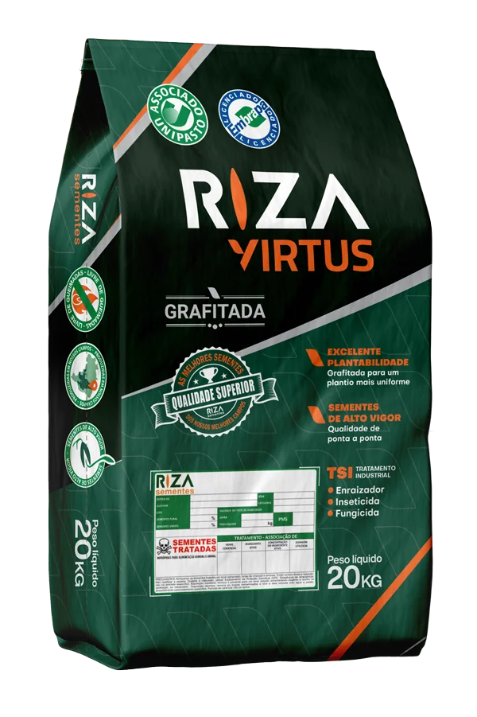
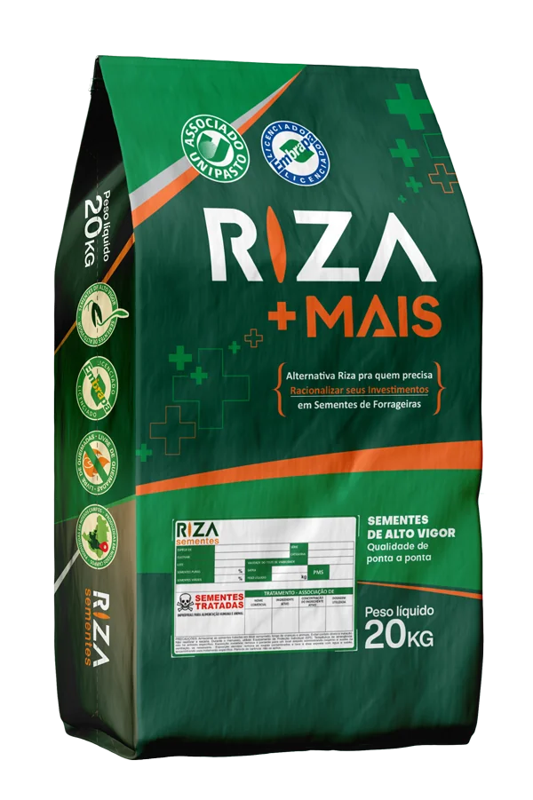
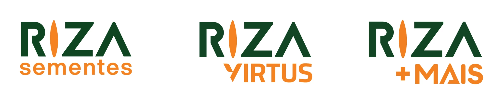
Fleet, facilities, signage: the brand inhabiting real space.
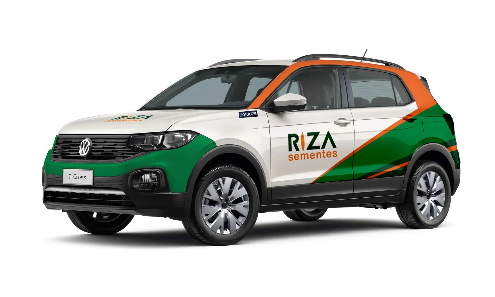
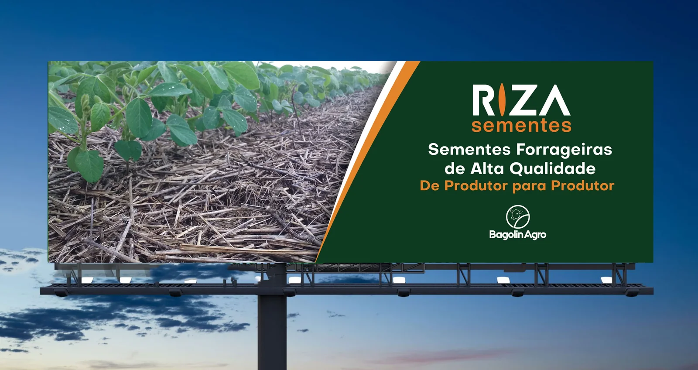
“Renato’s work brought a very distinctive way of thinking to our company and helped strengthen our brand. In every unit, wherever it is, I see the designer’s touch in everything, and everything speaks to our purpose.”
Translating agronomic science into clear, ownable visual language for the field.
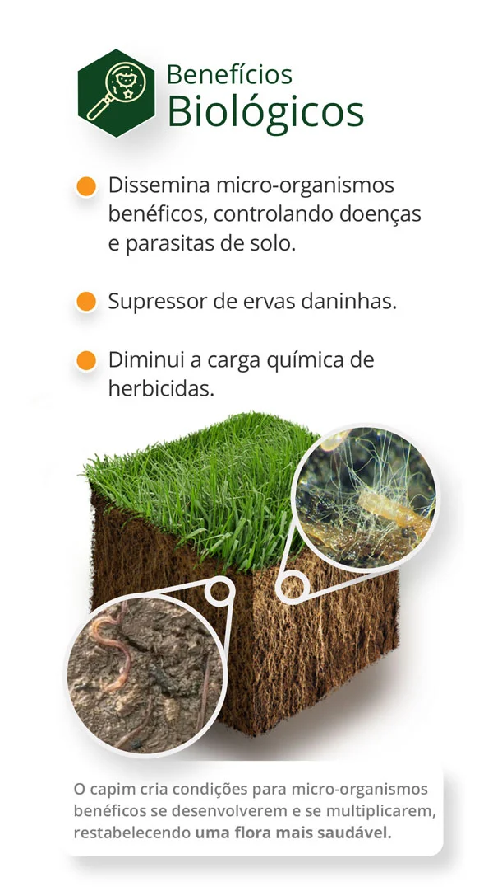
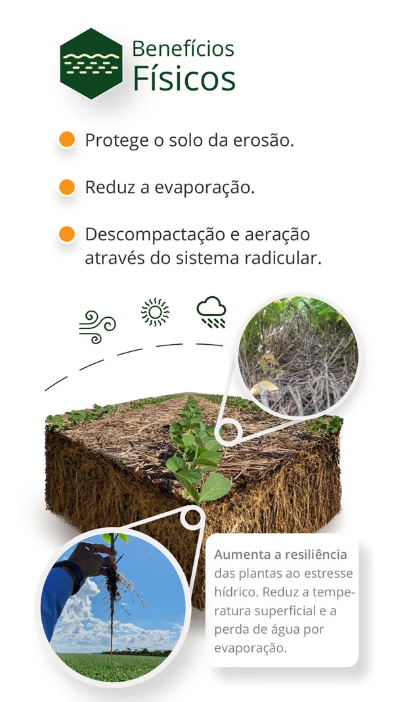
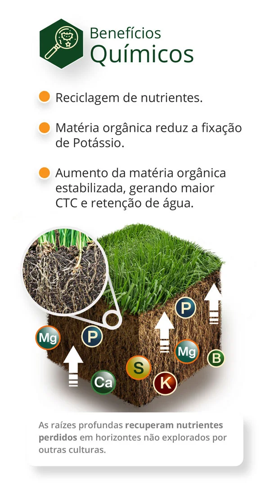
Riza Mix is the newest member of a family that is already working.
Be recognised as Riza before Mix.
Same hierarchical level.
Nematoides, Precoce, Pastejo, Eficiência and Café.
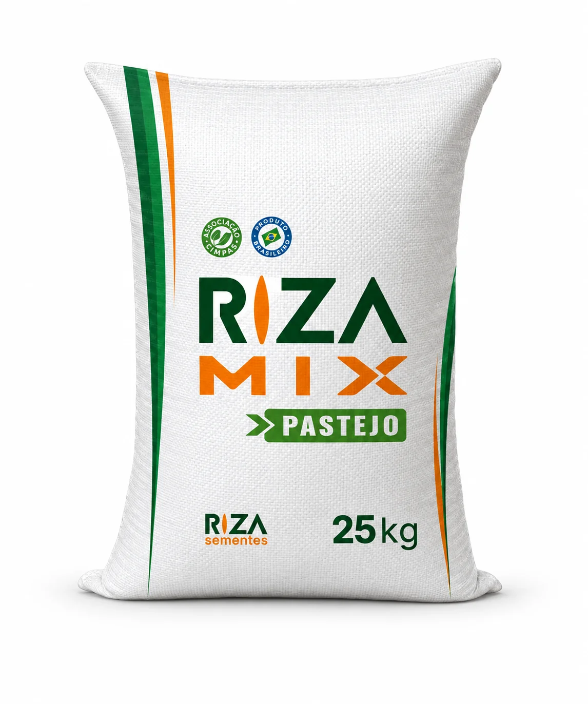
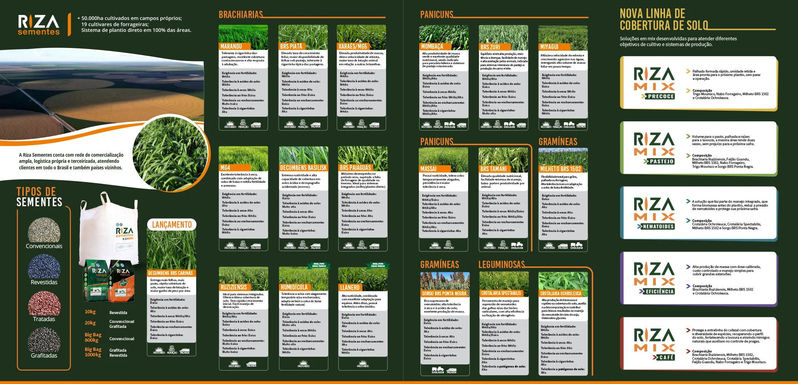
Ascent to Market Recognition
Within just 9 months, Riza Sementes experienced an unprecedented rise across key platforms.
Subscriber ranking
Audience ranking
Audience ranking
Maintained leadership
| Core Principle | Logo Expression | Market Impact |
|---|---|---|
| Premium Quality | Organic, structured geometry: meticulous design | Signals precision and care in every detail |
| Applied Knowledge | Seed as symbol of deep understanding | Communicates expertise rooted in science |
| Category Codes | Orange + green: the sector's shared visual language | Earns instant legitimacy with industry veterans |